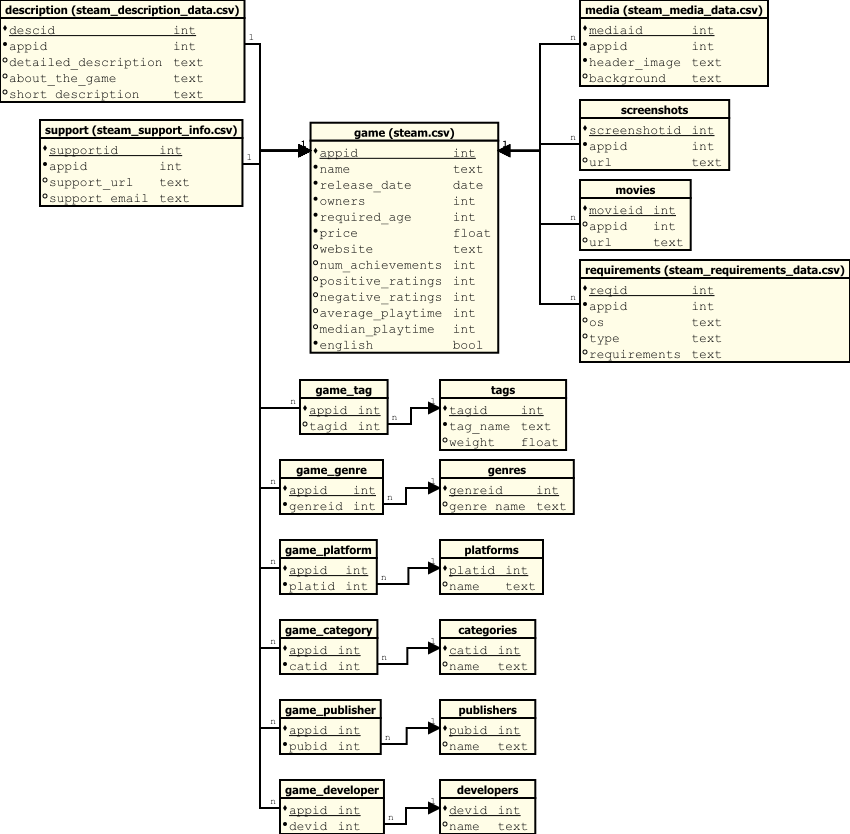

„A” relációs séma normalizálása
Normalizálás lépései
Első normálforma (1NF)
Az eredeti CSV-ben több attribútum nem atomi értékeket tartalmazott (pl. több screenshot, több címke, több kategória egyetlen cellában).
Az 1NF követelménye, hogy minden attribútum oszthatatlan, atomi értéket vegyen fel.
A listaértékű és összetett attribútumokat külön táblákba helyeztem.
Például:
tags+game_tag– címkék és játék–címke kapcsolatgenres+game_genre– műfajok és játék–műfaj kapcsolatplatforms+game_platform– platformok és játék–platform kapcsolatcategories+game_category– kategóriák és játék–kategória kapcsolatscreenshotsésmovies– minden kép vagy videó külön rekordban tárolvarequirements– a rendszerkövetelmények OS és típus (minimum/ajánlott) szerinti bontásban
Második normálforma (2NF)
A
gametábla elsődleges kulcsa azappid.Az olyan adatok, amelyek csak az
appid-tól függnek, de nem a játék alapadatait írják le, külön táblákba kerültek:description– részletes, rövid és általános leírásoksupport– támogatási információk (URL, email)media– fejléckép és háttérrequirements– operációs rendszer és követelménytípus szerinti bontás
Harmadik normálforma (3NF)
A tranzitív függőségeket megszüntettem:
A
developerséspublishersönálló entitások lettek, azappid-hoz kapcsolótáblákon (game_developer,game_publisher) keresztül kötődnek.A
categories,genres,tags,platformstáblák külön tárolják a neveket, és csak azonosítók szerepelnek a kapcsolatokban.
Minden több-több kapcsolat kapcsolótáblával van kezelve, így nincs redundancia a szöveges értékekben.
Végső séma – „A” reláció
A normalizálás eredményeként az „A” séma a következő főbb táblákból épül fel:
game– játék alapadataidescription– leírásoksupport– támogatási információkmedia– médiatartalmakscreenshots– képernyőképekmovies– előzetesek, videókrequirements– rendszerkövetelményektags– címkékgenres– műfajokplatforms– platformokcategories– kategóriákpublishers– kiadókdevelopers– fejlesztők
Kapcsolótáblák
game_tag– játék–címke kapcsolatgame_genre– játék–műfaj kapcsolatgame_platform– játék–platform kapcsolatgame_category– játék–kategória kapcsolatgame_publisher– játék–kiadó kapcsolatgame_developer– játék–fejlesztő kapcsolat
Összefoglalás
Az „A” relációs séma normalizálási lépései biztosítják:
Az adatredundancia minimális szinten tartását
A tranzitív függőségek kiküszöbölését
A listás és JSON mezők felbontását önálló táblákba
A sémák karbantarthatóságát és bővíthetőségét
Relációs séma diagram
{kind=link}
Dictionary
Az „A” adathalmaz dictionary-je az alábbi linken érhető el: